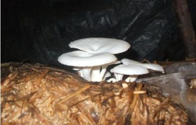
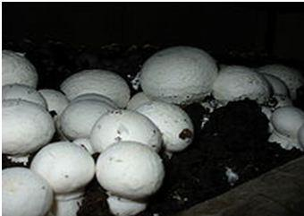
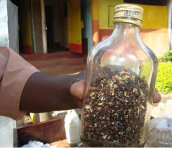
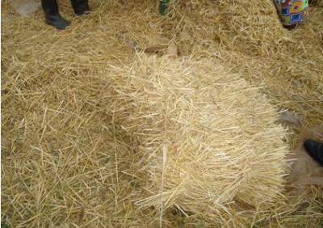
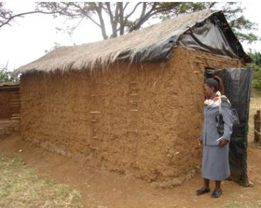
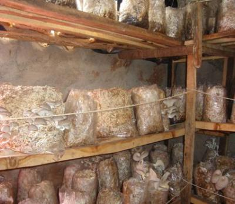

{kind=link}
{kind=link}
General Information and Agronomic Aspects
|  |
| Oyster mushrooms |
| (c) Courtesy of AIRC, Nairobi, Kenya
|
|  |
| Button mushrooms |
| (c) Courtesy of Wikipedia
|
1) potential markets and supply chains
2) source(s) of high quality spawn ('seeds' of mushrooms)
3) availability of substrate (material on which mushrooms grow)
4) availability of supplements (additional nutrients to the substrate)
5) production plan to ensure continuous production
Nutritive Value per 100 g of edible Portion
| Raw or Cooked Vegetable | Food Energy (Calories / %Daily Value*) | Carbohydrates (g / %DV) | Fat (g / %DV) | Protein (g / %DV) | Calcium (g / %DV) | Phosphorus (mg / %DV) | Iron (mg / %DV) | Potassium (mg / %DV) | Vitamin A (I.U) | Vitamin C (I.U) | Vitamin B 6 (I.U) | Vitamin B 12 (I.U) | Thiamine (mg / %DV) | Riboflavin (mg / %DV) | Ash (g / %DV) |
| Mushroom, oyster raw | 43.0 / 2% | 6.5 / 2% | 0.4 / 1% | 3.3 / 7% | 3.0 / 0% | 120 / 12% | 1.3 / 7% | 420 / 12% | 48 IU / 1% | 0.0 / 0% | 0.1 / 6% | 0.0 / 0% | 0.1 / 8% | 0.3 / 28% | 1.0 |
*Percent Daily Values are based on a 2000 calorie diet. Your daily values may be higher or lower, depending on your calorie needs.
Markets and marketing
1) type and amount in demand by market outlets
2) their price and availability
3) current distributors and possibility of business relationship
4) possibility of value addition
Production plan
|  |
| Spawn in a bottle |
| (c) Courtesy of AIRC, Nairobi, Kenya
|
Spawn
It is a planting material equivalent of farmers' seed for starting mushroom cultures. It is made from mycelia (plural of mycelium) of mushroom grown on a carrier such as grains and is produced in specialized laboratories under sterile conditions. The amount of spawn needed is equal to 4-6% of the wet weight of the substrate. For example if the wet weight of the substrate is 50 kg, 2-3 kg of spawn is required. One kg of spawn may cost between Kenya shillings 600 and 800.
In Kenya, there are a number of institutions such as JKUAT producing high quality spawn. Farmers who need spawn or training can contact the university at the following address: Business Manager, JKUAT Enterprises Ltd., P.O. Box 62000-00200, Nairobi. Mobile phone: 0722 728812.
|  |
| Wheat straw |
| (c) Courtesy of AIRC, Nairobi, Kenya
|
Substrate
Supplements
Mushroom house
|  |
| A grass thatched mud mushroom house |
| (c) Courtesy of AIRC, Nairobi, Kenya
|
|  |
| Wooden shelves holding bags in the house |
| (c) Courtesy of AIRC, Nairobi, Kenya
|
Overview on production of mushrooms
Phases of cultivation of button and oyster mushrooms
| Phase | Time span and temperature | Remarks |
| Substrate preparation | 6-8 hours for soaking shredded straw in water for oyster. Pre-wetting of wheat straw for button is done for 3 days | Selection of substrate. Cereal straws are preferred. Wheat straw is ideal for button. In case of oyster it involves shredding, soaking in water to 70% moisture content (1), draining excess water, adding supplements plus lime and packing into polybags. |
| Composting | 18-20 days | Oyster does not require composted substrate. Only applicable to button. Involves pre-wetting of wheat straw to 70% moisture content, adding supplements plus lime and gypsum. Good compost is dark brown, 70% moisture content and pH 8.0 - 8.5 (2) |
| Pasteurization and conditioning | 4-6 hours of steam heating at 60degC for oyster and cool polybags to 20-25degC. For button steam for 8 hours and lower the heat for 4-5 days at 45-50degC then cool to 22-25degC | Steam heating of oyster polybags is done in water drums but it can also be done in hot water at boiling point for 1 hour. Button steaming is done in special chambers (tunnels). Conditioning is to remove ammonia gas which is poisonous for button. Cooling is in preparation for spawning. The moisture content of the substrate then should be 67-70% |
| Spawning and incubation | 5-10 days incubation for oyster; 15 days for button at 23-25degC | Applying spawn to substrate in polybags. The growing room should be kept humid (RH 65-95%) (3) with dim lighting just sufficient to read a newspaper |
| Casing | Sterilize casing soil for 4 hours at 60degC. Casing run (4) is 14-15 days at 25degC | This is not applicable in oyster production. Casing is applying a thin layer of red top soil added with murram and lime on top of fully colonized substrate. Casing soil should be kept wet but not waterlogged. Substrate turns white to grayish due to the colour of mycelium. It is now ready for fruiting. |
| Pinning | Oyster 5-10 days in the growing house at 23-25degC. Button 7-10 days but the growing house temperature will depend on variety (5) | Pinning is when mycelia start fruiting (formation of very young mushroom known as 'pin heads'). It takes 3-4 days for pin heads to develop into mature mushrooms. RH required is 85-95%. |
| Harvesting | Oyster about 30 days, button 30-40 days from spawning to harvesting | Oyster harvesting is done when the mushroom ear is 7.5-10 cm in diameter, turgid and bright in colour. Button is picked at the young stage before opening. Repeated over 7-10 day cycles |
(1) When the substrate is squeezed between the fingers it should give 2 to 3 drops of water. If it gives more drops, continue draining and with fewer drops add more water.
(2) pH is a measure of acidity. A pH value of 7 is neutral, lower than 7 is acidic and above 7 is alkaline. It can be determined using a pH meter. pH meters are readily available in shops selling laboratory equipment for schools in urban areas of Kenya.
(3) Relative humidity (RH) is the percentage of moisture in the air compared to the maximal amount that the air can hold at that temperature and pressure. It can be monitored by using a hydrometer which can be bought in shops selling laboratory equipment. If the RH is low, spray clean water on the floor or place pots with water in the room. If the RH is above the required, open windows or vents of the room.
(4) Casing run is the period in which the mycelia is left to grow on the casing soil.
(5) There are varieties grown: white mushroom or 'champignon') (Agaricus bisporus) and tropical mushroom (Agaricus bitorquis). During pinning the temperature in the growing house should be reduced from 25 to 20-22degC for tropical mushroom, and for white mushroom to 12-18degC.
Yield
Post-harvest handling
General Information on Pests and Diseases
Mushroom abnormalities
Formation of scales or "crocodile skin"
Causes:
- Very dry air
- Strong air movement with low relative humidity
- Shortcomings in the air supply and distribution system
- Tendency of the strain to form scales
- Damage done by pesticides
Formation of stroma (dense layer of mycelium without fruiting on casing soil)
Causes:
- Low-quality degenerating mushroom strain
- Mycelial growth in a poorly ventilated casing layer, with a high concentration of carbon dioxide, high temperature and low humidity, and a high volume of evaporation
- Overly long period of mycelial growth in the casing layer
- Petroleum-based fumes or chemicals
Rosecomb (misshapen cap with gills on the cap)
Causes:
- Casing layer contaminated by mineral oils
- Contamination by petroleum-based materials
Outgrowths on mushroom caps - "cock's comb"
Causes:
- An overdose of pesticides
- Casing layer contaminated with chemicals
- Effect of exhaust gases, heating appliances, diesel oil, formalin vapors, dissolvers, paint
Thick stipes, small caps
Cause:
- Excessively high carbon dioxide level on the initial stage of growth
A small cap on a normal stipe
Causes:
- Improper climatic conditions for specific strains
- Susceptibility of some strains